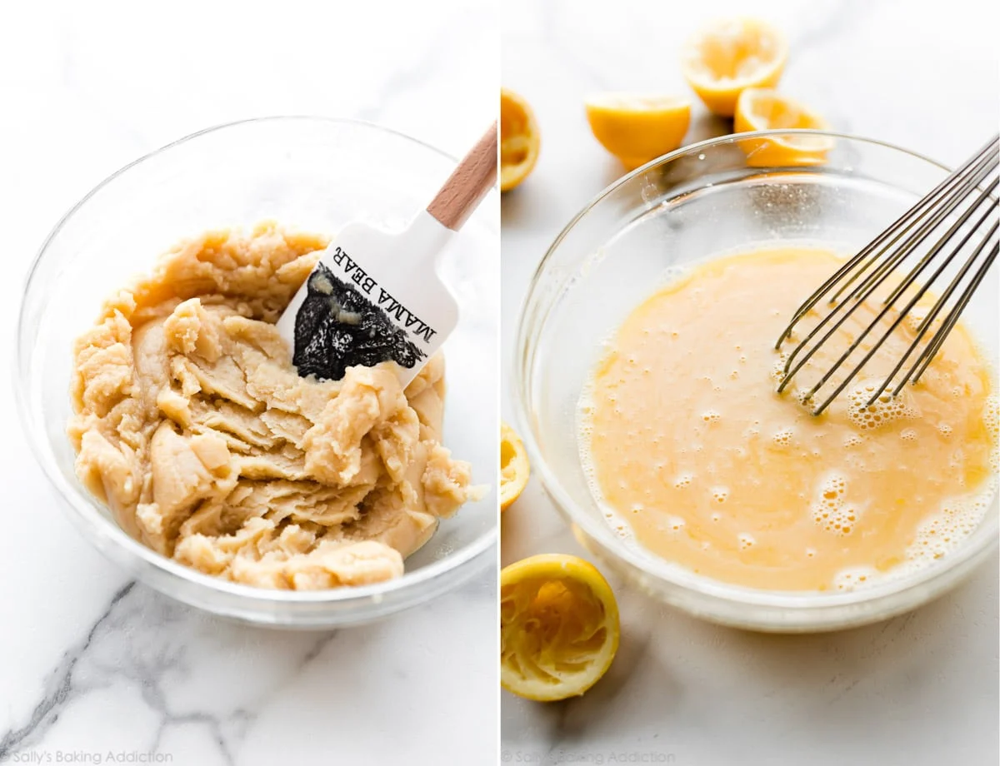
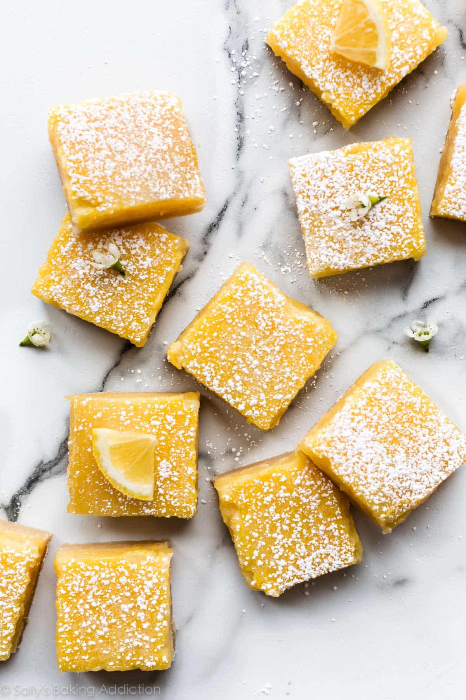
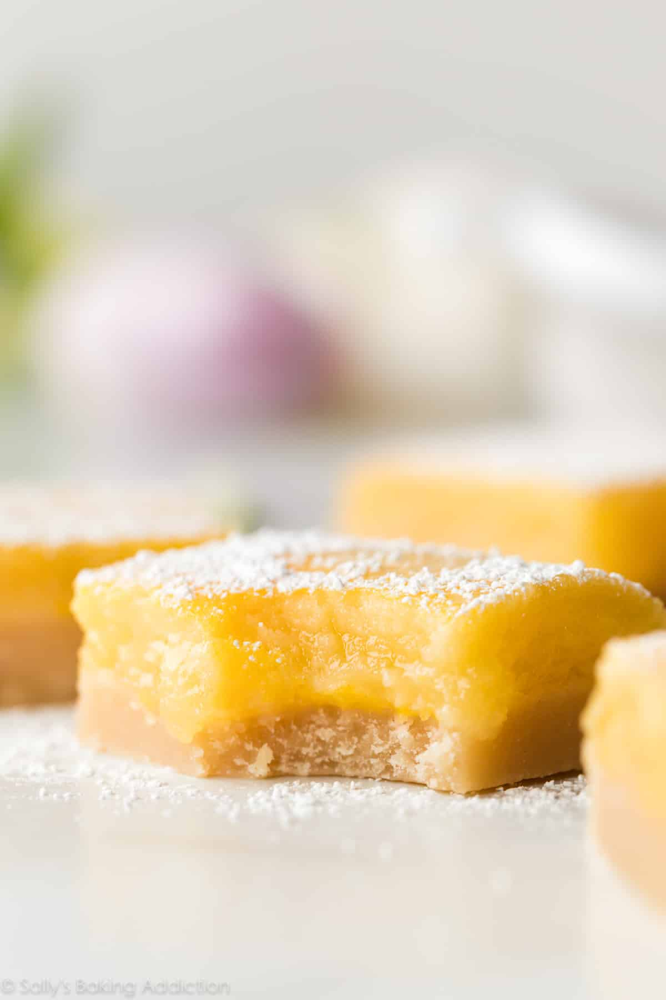

Recipe Content
Title:
Lemon Bars with Shortbread Crust
Description:
These are classic lemon bars featuring a soft butter shortbread crust and a tangy sweet lemon curd filling that’s baked to the perfect consistency. The lemon layer is thick and substantial, not thin or flimsy like most other lemon bar recipes.
Prep Time: 10 minutes, Cook Time: 40 minutes, Total Time: 3 hours 50 minutes, Yield: 24 bars
Ingredients
Shortbread crust
- 1 cup (226 g) unsalted butter, melted
- 1/2 cup (100 g) granulated sugar
- 2 teaspoons pure vanilla extract
- 1/2 teaspoon salt
- 2 cups + 2 tablespoons (265 g) all-purpose flour
Lemon filling
- 2 cups (400g) granulated sugar
- 6 tablespoons all-purpose flour
- 6 large eggs
- 1 cup (240ml) fresh lemon juice (about 4 lemons)
- 2 teaspoons fresh lemon zest, optional
- Optional: confectioners sugar for dusting
Instructions:
- Preheat the oven to 325°F (163°C). Line the bottom and sides of a 9×13-inch glass baking pan (do not use metal) with parchment paper, leaving an overhang on the sides to lift the finished bars out (makes cutting easier!). Set aside.
- Make the crust:Mix the melted butter, sugar, vanilla extract, and salt together in a medium bowl. Add the flour and stir to completely combine. The dough will be thick. Press firmly into prepared pan, making sure the layer of crust is nice and even. Bake for 20-22 minutes or until the edges are lightly browned. Remove from the oven. Using a fork, poke holes all over the top of the warm crust (not all the way through the crust). A new step I swear by, this helps the filling stick and holds the crust in place. Set aside until step 4.
- Make the filling: Sift the sugar and flour together in a large bowl. Whisk in the eggs, then the lemon juice and lemon zest (if using) until completely combined.
- Prepare the filling: Whisk all of the filling ingredients together. No cooking on the stove!
- Pour filling over warm crust. Bake the bars for 22-26 minutes or until the center is relatively set and no longer jiggles. (Give the pan a light tap with an oven mitt to test.) Remove bars from the oven and cool completely at room temperature. I usually cool them for about 2 hours at room temperature, then stick in the refrigerator for 1-2 more hours until pretty chilled. I recommend serving chilled.
- Once cool, lift the parchment paper out of the pan using the overhang on the sides. Dust with confectioners’ sugar and cut into squares before serving. For neat squares, wipe the knife clean between each cut. Cover and store leftover lemon bars in the refrigerator for up to 1 week.
- Freezing instructions:Lemon bars can be frozen for up to 3-4 months. Cut the cooled bars (without confectioners’ sugar topping) into squares, then place onto a baking sheet. Freeze for 1 hour. Individually wrap each bar in aluminum foil or plastic wrap and place into a large bag or freezer container to freeze. Thaw in the refrigerator, then dust with confectioners’ sugar before serving.
Source Attribute:
Recipe Source
Imagery




Recipe Website Links
Smitten Kitchen This website is unique because the title for each recipe starts with lowercase. I like the way they made the recipe really stand out compared to the rest of the text, in its own box, so it is easy to scroll and see it. The purple recipe box is pretty yet simple and easy to read.
Joy Food Sunshine The recipe pages on this website feature really bright and classy pictures of each dish. I also like how for the ingredients, they bold the ingredient and don't bold the short description next to each one.
Food 52 I like the way this website has simple slides on the homepage, and each slide is in a different color. In the recipes, I love the cute font choices that are consistent throughout the page.
Non-Recipe Website Links
Aritzia The Aritzia website design has a lot of clean lines and neutrals. It has a modern feel that would make recipes easy to follow and feel clean and upscale.
WashU The WashU website has deign elements that could translate well. I like how they use colors that connect to their brand, and use nice fonts. They also use all caps and a more blocky font for emphasis. I also like the way things are sectioned out using boxes with padding.
St. Louis Zoo Under the "mission" tab, I think the design is easy to read well also being stylish. They mix light blue and tan to create a calm feeling. The font is quite nice as well, and the images of animals help them emphasize their message.